MailArchiver — документация
Сервис резервного копирования почтовых ящиков по IMAP с веб-интерфейсом, очередью заданий, планировщиком, подробной статистикой и экспортом копий в формат .pst для Microsoft Outlook.
Эта документация написана так, чтобы ей мог воспользоваться даже не специалист. Если вы умеете копировать команды в терминал и заполнять формы в браузере — вы справитесь. Сложные места снабжены пояснениями и подсказками.
.pst и открыть его
в Outlook, либо «залить» письма обратно на почтовый сервер, если они пропали.Ключевые возможности
- Резервное копирование по IMAP — инкрементальное (докачиваются только новые письма), с сохранением папок и флагов.
- Расписание — копирование запускается автоматически (например, каждую ночь).
- Экспорт в .pst для всех версий Outlook (ANSI для 97–2002, Unicode для 2003+), а также в EML и MBOX.
- Восстановление писем из копии обратно на любой IMAP-сервер.
- Импорт из .pst — залить существующий PST-файл на почтовый сервер.
- Просмотр писем прямо в интерфейсе (папки, список, чтение с вложениями и HTML).
- Вход по ящику — по email и паролю самого ящика; такой пользователь видит только свой ящик.
- Хранение копий за 3 дня / 1 неделю от текущей даты (пресеты очистки на каждый ящик).
- Веб-интерфейс с живой статистикой, очередью, логами и подсказкой к каждому параметру.
- Очередь заданий с приоритетами, ограничением нагрузки и повторными попытками при сбоях.
- Безопасность — вход по паролю, шифрование паролей ящиков, защита от подбора.
2. Как это работает (методология)
MailArchiver состоит из нескольких взаимодействующих частей. Понимание общей схемы поможет настроить сервис под ваши задачи.
Резервное копирование: инкрементальный алгоритм
При копировании MailArchiver не скачивает всё заново каждый раз. Он использует стандартные механизмы IMAP:
- у каждого письма в папке есть уникальный номер UID;
- у папки есть признак UIDVALIDITY — если он изменился, папка перечитывается целиком (так требует протокол);
- сервис помнит, какие UID уже сохранены, и докачивает только новые письма.
Каждое письмо сохраняется отдельным файлом в формате Maildir (стандарт, который понимают многие почтовые программы). Отдельный файл на письмо — это надёжно: повреждение одного файла не затрагивает остальные, копию легко просматривать и переносить. После записи размер и контрольная сумма (SHA-256) сверяются — это защищает от «тихой» порчи данных.
Очередь и планировщик
Любая тяжёлая операция (копирование, экспорт, восстановление) ставится в очередь и выполняется фоновыми воркерами. Это позволяет: видеть прогресс в реальном времени, не перегружать почтовый сервер (лимит одновременных подключений на ящик), безопасно повторять при сбоях. Планировщик по расписанию сам ставит задания в очередь — например, «каждый день в 3:00 сделать бэкап всех ящиков».
3. Установка
Есть два способа. Выберите один.
Способ А. Установка скриптом (служба systemd) — рекомендуется для сервера
Подходит для обычного Linux-сервера (Debian/Ubuntu, RHEL/Rocky/Alma/Fedora, openSUSE, Arch). Скрипт сам определит дистрибутив, установит зависимости, создаст службу и настроит автозапуск.
- Скопируйте папку проекта на сервер (например, через
scpилиgit) и зайдите в неё:cd mail_backup
- Запустите установку с правами администратора:
sudo bash scripts/install.sh
Скрипт установит Python-зависимости в изолированное окружение, создаст пользователяmailarchiver, службу и файл настроек/etc/mailarchiver/config.yaml. - В конце установки появится запрос на создание администратора — введите логин и пароль. Если установка
шла без интерактивного ввода, создайте его вручную:
sudo -u mailarchiver /opt/mailarchiver/venv/bin/mailarchiver \ -c /etc/mailarchiver/config.yaml create-admin
- Готово. Веб-интерфейс доступен на
http://127.0.0.1:8493.
systemctl status mailarchiver # состояние journalctl -u mailarchiver -f # смотреть логи в реальном времени systemctl restart mailarchiver # перезапуск
127.0.0.1 (локально) — это безопасно. Чтобы открыть доступ
из сети, настройте reverse proxy (nginx/traefik) с HTTPS (см. раздел «Безопасность»), а не открывайте порт напрямую.Способ Б. Docker Compose — самый простой
Если на сервере есть Docker, это самый быстрый путь: все зависимости уже внутри образа.
- Зайдите в папку
dockerпроекта и при необходимости откройтеdocker-compose.yml, чтобы задать логин/пароль администратора (переменныеMA_ADMIN_USERиMA_ADMIN_PASSWORD). - Соберите и запустите контейнер:
cd docker docker compose up -d
- Откройте
http://ВАШ_СЕРВЕР:8493и войдите под заданными логином/паролем.
mailarchiver-data и переживают перезапуск и обновление
контейнера. Экспортированные файлы можно забирать через веб-интерфейс (кнопка «Скачать») или смонтировать
хост-каталог в /data/exports.4. Первый вход
При первом открытии веб-интерфейса вам предложат создать администратора (если он ещё не создан). Затем — обычная форма входа.
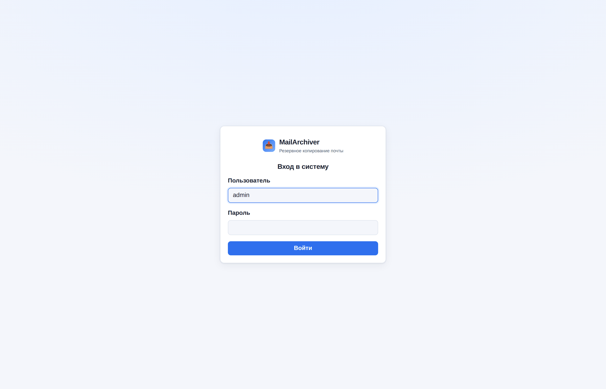
1. Администратор — логин и пароль, заданные при первичной настройке; видит и настраивает всё.
2. Пользователь-ящик — вход по email и паролю самого почтового ящика (пароль проверяется прямым подключением к IMAP). Такой пользователь видит только свой ящик: может просматривать письма, запускать копирование, экспорт и восстановление своего ящика, но не имеет доступа к настройкам, другим ящикам и управлению пользователями. Ящик должен быть заранее добавлен администратором и включён.
5. Дашборд и мониторинг
Главный экран показывает всё важное сразу: число ящиков, писем в архиве, что сейчас в очереди/работе, свободное место, живую ленту текущих операций с прогрессом, график активности и список ящиков с кнопкой быстрого копирования.
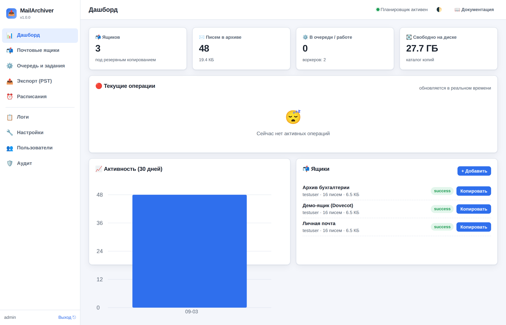
Блок «Текущие операции» обновляется автоматически (через WebSocket). Для каждой операции виден процент выполнения, скорость, объём и кнопка отмены.
6. Просмотр писем
Раздел «Почта» — это встроенный почтовый клиент для чтения писем из локальной копии, без подключения к серверу. Слева — папки, посередине — список писем, справа — само письмо.
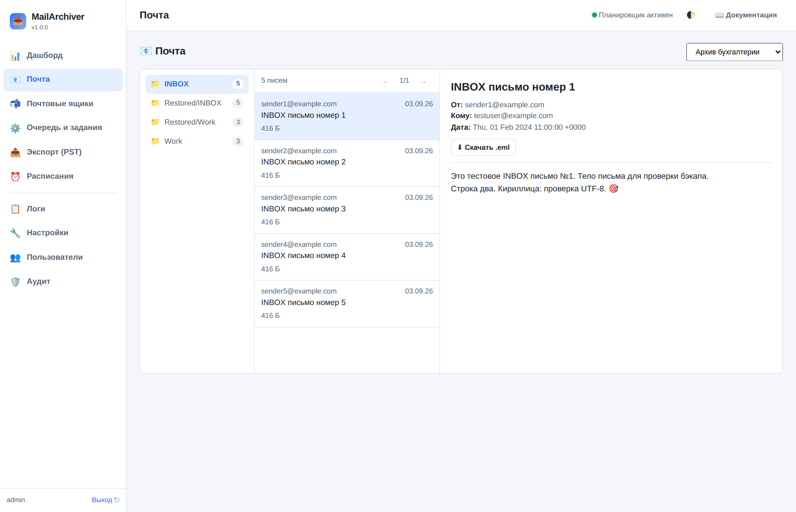
Возможности просмотра:
- чтение текста письма и HTML-версии (HTML открывается в изолированной «песочнице» — скрипты не выполняются, это безопасно);
- заголовки: от кого, кому, копия, дата;
- вложения — со скачиванием по клику;
- скачивание письма целиком в формате
.eml; - непрочитанные письма выделены жирным, помеченные — звёздочкой; постранично.
7. Аналитика
Два раздела аналитики доступны только администратору. Пользователь, вошедший по адресу и паролю почтового ящика, их не видит. Все графики рисуются прямо в браузере, без обращения к внешним сервисам — интерфейс полностью работает в закрытом контуре.
Раздел «Аналитика» — состояние системы
Отвечает на вопрос «как работает сервис»: сколько хранится, что происходит с заданиями, не заканчивается ли место. Сверху выбираются область (все ящики или один) и период графика активности (30 дней, 90 дней, полгода, год).
Плитки показывают: письма в архиве, объём копий и средний размер письма, число ящиков и папок, задания и долю успешных, прогоны копирования, экспорты, расписания, свободное место, размер базы, пользователей и сессии, состояние планировщика.
- Активность по дням — график с переключателем метрики: письма, объём, задания, ошибки;
- Задания по статусам и типам — кольцевая диаграмма и столбцы;
- Длительность заданий — среднее и максимальное время по типам (рост средней длительности бэкапа — повод проверить сеть или почтовый сервер);
- Экспорт по форматам и движкам, хранилище по ящикам, ближайшие запуски расписаний и топ действий из журнала аудита.
Раздел «Аналитика писем» — содержание почты
Отвечает на вопрос «что лежит в ящике»: кто пишет, когда, насколько объёмные письма, о чём они. Сверху выбирается ящик или «Все ящики». Раздел состоит из двух частей.
Быстрая часть считается по индексу писем (тема, отправитель, дата, размер, флаги, папка) и работает мгновенно даже на больших ящиках:
- всего писем и период, объём, средний и медианный размер, число отправителей и доменов;
- доля писем с вложениями и доля непрочитанных, ответы и пересылки, важные письма;
- динамика по месяцам, распределение по годам, дням недели и часам суток;
- тепловая карта «день недели × час» — наглядно показывает рабочие часы и активность в выходные;
- гистограмма размеров — что именно занимает место;
- топ отправителей и доменов, разбивка по папкам, облако частых слов из тем;
- крупнейшие письма — таблица самых тяжёлых писем.
Глубокий анализ содержимого вскрывает каждое письмо (файл .eml) и извлекает то,
чего нет в индексе. Это тяжёлая операция, поэтому она вынесена в фоновое задание: нажмите
«Запустить анализ» (или «Пересчитать»), а прогресс смотрите в разделе «Очередь и задания».
Результат сохраняется и при следующем открытии показывается сразу, с датой расчёта.
- число вложений, их объём и в скольких письмах встречаются;
- типы вложений — по расширению (pdf, docx, xlsx, zip…) и по MIME-типу;
- домены получателей — кому писали (поля «Кому» и «Копия»);
- формат тела (текст / HTML / оба) и язык (русский, латиница, смешанный);
- средняя длина текста и облако частых слов по содержимому писем.
8. Добавление почтового ящика
Раздел «Почтовые ящики» → кнопка «Добавить ящик». Заполните форму. У каждого поля есть подсказка «?» — наведите на неё, чтобы прочитать описание, рекомендацию и пример.
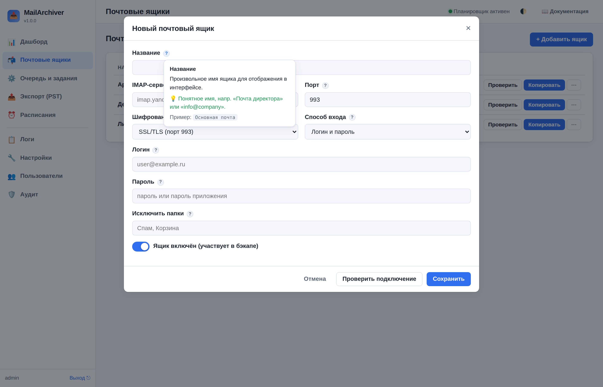
- Введите название (любое понятное имя), адрес IMAP-сервера и порт.
- Выберите шифрование (обычно SSL/TLS, порт 993).
- Укажите логин и пароль. Для большинства провайдеров нужен «пароль приложения» (см. ниже).
- Нажмите «Проверить подключение» — сервис попробует войти и покажет список папок.
- Сохраните. Теперь ящик можно копировать.
Настройки популярных провайдеров
| Провайдер | IMAP-сервер | Порт / шифрование | Примечание |
|---|---|---|---|
| Яндекс.Почта | imap.yandex.ru | 993 / SSL | Включить IMAP; пароль приложения |
| Mail.ru | imap.mail.ru | 993 / SSL | Пароль для внешних приложений |
| Gmail | imap.gmail.com | 993 / SSL | OAuth2 или пароль приложения (с 2FA) |
| Microsoft 365 / Outlook | outlook.office365.com | 993 / SSL | Обычно только OAuth2 |
| Свой сервер (Dovecot и т.п.) | адрес вашего сервера | 993 / SSL или 143 / STARTTLS | — |
9. Сотрудники
Раздел «Сотрудники» (виден только администратору) — справочник людей организации и связь каждого из них с почтовым ящиком. В разделе «Почтовые ящики» видны технические записи: адрес, сервер, логин; по ним не всегда понятно, чья это почта. Справочник добавляет ФИО, должность и отдел и позволяет завести ящики сразу на весь список из кадровой выгрузки, а не по одному вручную.
Что можно делать: добавить сотрудника, изменить карточку (✏️), удалить (✕), загрузить список из файла («⬆️ Импорт из файла»), синхронизировать с источником из настроек («↻ Синхронизировать»), посмотреть шаблон создаваемых ящиков («🧩 Шаблон ящиков») и скачать готовый образец файла («📄 Образец файла»). Сверху — счётчики: сколько сотрудников, у скольких есть ящик и у скольких его нет. Под заголовком — плашка источника: откуда берётся список, включено ли расписание и кнопка «🔍 Проверить источник», которая читает источник и показывает число строк, ничего не меняя в справочнике. Ниже — поиск по ФИО, почте и отделу.
Файл со списком
Подходят CSV и Excel (.xlsx). Первая строка — заголовки, порядок столбцов любой, лишние столбцы игнорируются. Названия распознаются без учёта регистра: ФИО (или «Имя», «Сотрудник»), E-mail («Почта», «Адрес»), Должность, Отдел, Телефон, Табельный номер («ID», «Код»). Кодировка определяется автоматически — UTF-8 и Windows-1251.
Табельный номер;ФИО;E-mail;Должность;Отдел;Телефон
1024;Иванов Иван Иванович;ivanov@example.ru;Менеджер;Продажи;+7 900 111-22-33После загрузки показывается отчёт: сколько карточек добавлено и обновлено, сколько ящиков создано и привязано, и список строк, которые не удалось разобрать — с номером строки и причиной.
Форматы выгрузки
Читаются CSV, Excel (.xlsx) и «Таблица XML 2003» (SpreadsheetML) — в таком виде
выгружают списки интранет-справочники и корпоративные системы. Формат определяется по содержимому,
поэтому неважно, как называется файл и что отдаёт сервер по ссылке (.xls, .xml
или вовсе без расширения).
В XML-выгрузках разбираются их особенности: ФИО тремя колонками («фамилия», «имя», «отчество») склеивается в одно; колонка без заголовка со значениями «да»/«нет» читается как признак «работает» (строки с «нет» в справочник не попадают и ящик им не заводится); пустой заголовок сразу после «имени» — это отчество; из нескольких телефонов в карточку идёт мобильный, затем рабочий, затем внутренний; HTML внутри ячейки убирается. Такие файлы часто невалидны как XML — разбор к этому устойчив.
Если один адрес встречается у нескольких сотрудников (общий ящик склада или сервиса), карточка заводится одна, а в итоге синхронизации сообщается, какие адреса повторяются.
Пароли ящиков из файла
Ящики, заведённые сотрудникам автоматически, создаются без пароля. Чтобы не открывать сотни карточек по одной: «Почтовые ящики» → «🔑 Загрузить пароли». Файл — XLSX, CSV или XML-таблица из двух колонок: адрес ящика и пароль; заголовки необязательны. Ящик ищется по логину, а если такого логина нет — по адресу сотрудника из справочника. Галочка «Включить ящики после установки пароля» сразу включает выключенные. В отчёте видно, сколько ящиков обновлено и включено, для каких адресов ящик не нашёлся и какие строки не разобраны.
Откуда берётся список: файл или URL
Источник выбирается настройкой «Источник списка» в «Настройки» → «Сотрудники».
- Файл на сервере — служба читает CSV/XLSX по пути на диске, например
/var/lib/mailarchiver/hr/employees.csv. Подходит, когда кадровая система кладёт файл на сервер или в смонтированную сетевую папку. Файл читает службаmailarchiver— у неё должны быть права на чтение. - Адрес (URL) — служба сама скачивает выгрузку по ссылке
http(s)://перед каждой синхронизацией; копировать файл на сервер архива не нужно. Можно задать логин и пароль (HTTP Basic), таймаут, проверку сертификата и формат ответа. Пароль хранится в базе зашифрованным и в интерфейс не возвращается.
Загрузка по ссылке проверяет ответ сама: HTML-страница входа вместо файла, ответы 401/403, размер больше 20 МБ и неверно угаданный формат объясняются понятным текстом, а не ошибкой разбора. XLSX опознаётся по содержимому, даже если в ссылке нет расширения.
Автоматическая синхронизация
Настраивается в «Настройки» → раздел «Сотрудники»: включение, источник (файл или URL), расписание
(по умолчанию 0 5 * * * — ежедневно в 05:00) и признак «заводить ящики новым сотрудникам».
Синхронизация выполняется обычным фоновым заданием, поэтому её ход виден в разделе «Очередь и задания».
Правила сопоставления: сначала по табельному номеру, при его отсутствии — по адресу почты. Новые карточки добавляются, у существующих обновляются только заполненные поля — пустые значения в файле ничего не затирают.
Шаблон настроек создаваемых ящиков
Когда сервис заводит ящик сотруднику — при синхронизации или при добавлении карточки вручную — он берёт настройки из шаблона в «Настройки» → «Сотрудники». Шаблон задаёт сервер, порт и шифрование, название и логин ящика, заметку, включать ли ящик сразу, фильтры папок, срок хранения и — при желании — расписание копирования для нового ящика. Посмотреть результат, не заводя ящиков, можно кнопкой «🧩 Шаблон ящиков».
| Параметр шаблона | Что задаёт |
|---|---|
| Название ящика (шаблон) | Как ящик называется в списке, напр. {full_name} ({department}) |
| Логин ящика (шаблон) | Имя пользователя на сервере: {email} либо {local}, если входят коротким именем |
| Заметка (шаблон) | Текст в поле «Заметки», напр. Создан автоматически: {position}, {department} |
| Включать созданные ящики | Включать сразу или оставлять выключенным до ввода пароля |
| Папки: копировать / пропускать | Фильтры папок нового ящика, напр. пропускать «Спам, Корзина» |
| Срок хранения | -1 — как в общих настройках, 0 — вечно, N — N дней |
| Расписание копирования | Создавать ли новому ящику расписание и с каким cron-выражением |
Подстановки в шаблонах названия, логина и заметки: {full_name}, {last_name},
{first_name}, {email}, {local}, {domain},
{position}, {department}, {external_id}. Пустые значения и оставшиеся
от них скобки убираются: {full_name} ({department}) для сотрудника без отдела даст просто ФИО.
10. Резервное копирование
Запустить копирование вручную можно из раздела «Почтовые ящики»:
- «💾 Копия сейчас» в строке ящика (или пункт «Сделать резервную копию сейчас» в меню «⋯») — копирование одного выбранного ящика;
- «💾 Копия всех ящиков сейчас» — кнопка вверху справа ставит в очередь копирование всех включённых ящиков разом. Программа спросит подтверждение и покажет, сколько ящиков будет обработано. Выключенные ящики пропускаются, а ящики, по которым копирование уже идёт, не запускаются повторно — поэтому случайное повторное нажатие не удваивает нагрузку.
Кроме того, копирование запускается автоматически по расписанию (раздел «Расписания»).
Поиск и отбор ящиков
Над списком — строка поиска (по названию, логину и серверу) и отбор по состоянию: все, только включённые, только выключенные, без пароля и готовые к копированию (включён и пароль задан). Рядом с каждым пунктом показано число ящиков, а справа — «показано N из M». Это нужно, когда ящиков сотни: после синхронизации сотрудников они заводятся выключенными и без пароля, и найти их глазами в общем списке невозможно.
Копирование инкрементальное — при повторных запусках докачиваются только новые письма, поэтому оно быстрое. Прогресс виден в разделе «Очередь и задания».
Скопировать заново
Меню ящика «⋯» → «🔄 Скопировать заново». Два режима:
- Докачать потерянные письма (безопасный, выбран по умолчанию) — сервис сверяет индекс с файлами на диске и, если файл письма пропал или оказался пустым (сбой диска, оборванный прогон, чужая уборка), убирает запись из индекса, чтобы письмо скачалось заново. Ничего не удаляется.
- Полностью с нуля — стирает локальную копию ящика (и файлы писем, и записи индекса) и скачивает всё с сервера заново. Доступно только администратору, запрашивает подтверждение и записывается в аудит.
0 3 * * *). Так копирование не будет мешать
работе и меньше нагрузит почтовый сервер.11. Экспорт в PST (и EML/MBOX)
Из локальной копии можно получить файл для Outlook. Откройте ящик (меню «⋯») → «Экспорт».
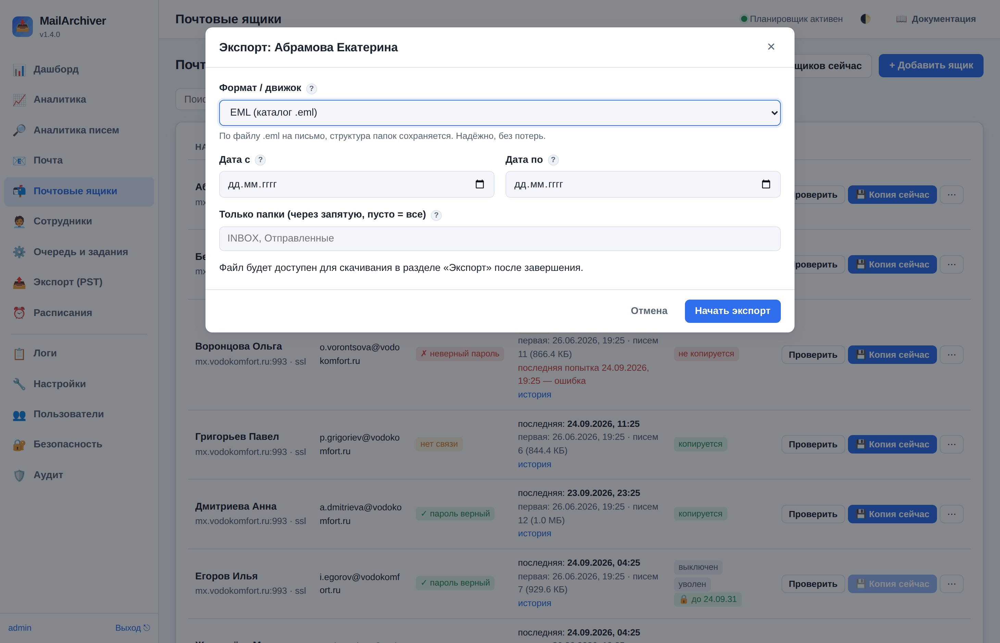
Какой движок выбрать
| Движок | Формат | Надёжность | Когда использовать |
|---|---|---|---|
| Aspose PST надёжно | .pst | Высокая | Нужен гарантированный .pst. Требует библиотеки Aspose.Email и лицензии для продакшена. |
| Встроенный PST эксперим. | .pst | Средняя | Бесплатно, без зависимостей. Проверяйте результат в своём Outlook. |
| EML надёжно | каталог .eml (.zip) | Высокая | Без потерь. Письма можно перетаскивать в Outlook, хранить как архив. |
| MBOX надёжно | .mbox (.zip) | Высокая | Импорт в Thunderbird и конвертеры в Outlook. |
Версии Outlook: ANSI или Unicode
Параметр «Формат PST» определяет совместимость:
- Unicode — для Outlook 2003 и новее (2007/2010/2013/2016/2019/2021/365). Большой объём, поддержка любых языков. Рекомендуется.
- ANSI — для очень старого Outlook 97–2002. Ограничение размера 2 ГБ.
Просто выберите вашу версию Outlook в поле «Целевая версия Outlook» — формат подберётся автоматически.
Готовые файлы появляются в разделе «Экспорт (PST)», откуда их можно скачать.
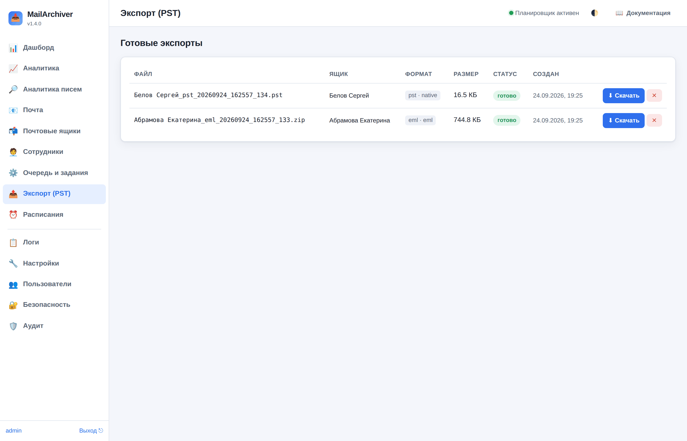
Как открыть .pst в Outlook
- Скачайте файл .pst из раздела «Экспорт».
- В Outlook: Файл → Открыть и экспортировать → Открыть файл данных Outlook и выберите скачанный .pst.
- Папки появятся в левой панели Outlook.
12. Восстановление на сервер
Если письма пропали на почтовом сервере, их можно вернуть из локальной копии. Откройте ящик (меню «⋯») → «Восстановить на сервер».
Восстановление сохраняет флаги (прочитано/важное) и дату получения писем.
Импорт из существующего .pst
Меню ящика → «Импорт из .pst»: загрузите PST-файл, и его письма зальются на IMAP-сервер в папку с
указанным префиксом. Для этого на сервере должен быть установлен readpst (пакет pst-utils) —
скрипт установки ставит его автоматически, в Docker он уже включён.
Хранение копий: 3 дня / 1 неделя
Можно ограничить, за какой период хранить локальные копии писем каждого ящика — например, только за последние 3 дня или 1 неделю от текущей даты. Копии старше выбранного срока удаляются автоматически (ежедневная очистка). На письма на самом почтовом сервере это не влияет.
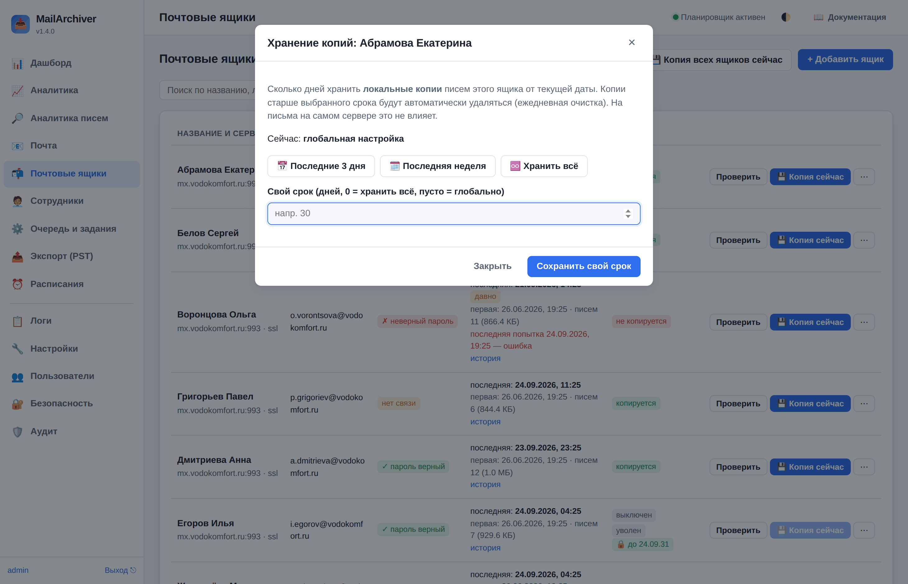
Открыть: меню ящика (⋯) → «Хранение копий», либо задать в форме ящика поле «Хранение локальных копий». При выборе срока автоматически создаётся ежедневное расписание очистки. Значение «по глобальной настройке» берёт срок из общих настроек (раздел «Хранение и очистка»).
13. Расписания
Раздел «Расписания» позволяет запускать бэкап (или очистку/проверку) автоматически.
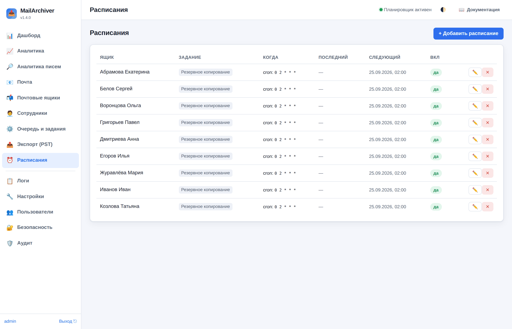
Тип «по времени (cron)» задаётся выражением из пяти полей: минуты часы день месяц день_недели.
| Выражение | Значение |
|---|---|
0 3 * * * | каждый день в 03:00 |
0 */6 * * * | каждые 6 часов |
30 2 * * 1 | каждый понедельник в 02:30 |
0 22 * * 1-5 | по будням в 22:00 |
Часовой пояс расписаний задаётся в настройках (по умолчанию Europe/Moscow).
14. Настройки — справочник всех параметров
Раздел «Настройки» сгруппирован по темам. У каждого параметра есть подсказка «?» с описанием, рекомендацией и примером. Ниже — полный справочник тех же параметров.
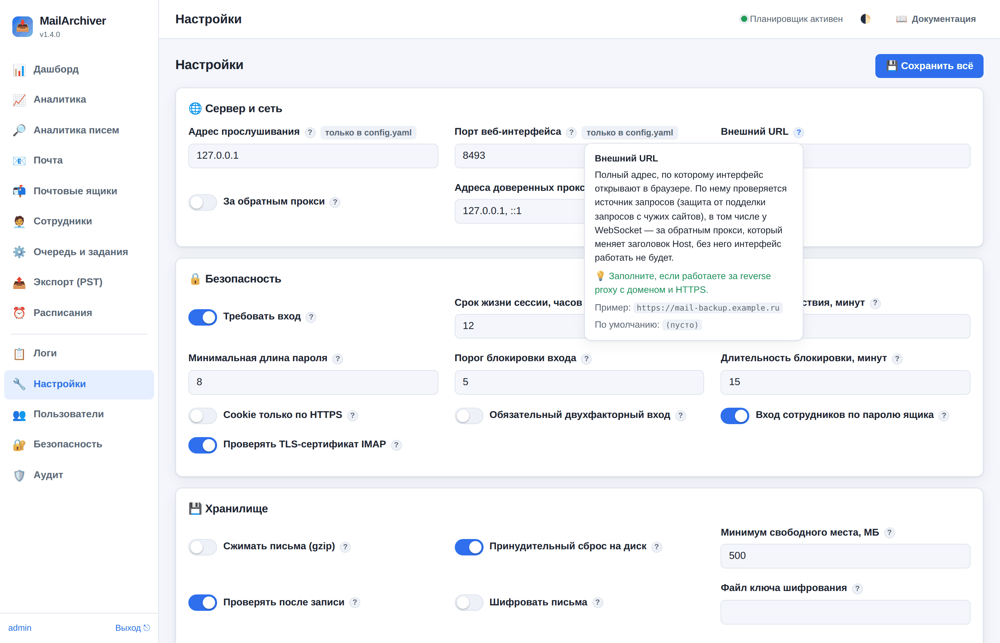
🌐 Сервер и сеть
server.hostIP-адрес, на котором веб-интерфейс принимает подключения. 127.0.0.1 — только с самого сервера (безопасно, обычно за reverse proxy). 0.0.0.0 — со всех сетевых интерфейсов.
💡 Оставьте 127.0.0.1 и поставьте перед сервисом nginx/traefik с HTTPS. Ставьте 0.0.0.0 только если понимаете риски и включили аутентификацию.
server.portTCP-порт, на котором работает веб-интерфейс.
💡 Порт по умолчанию 8493 подходит в большинстве случаев. Меняйте, если он занят.
server.public_urlПолный адрес, по которому сервис доступен снаружи. Используется для формирования ссылок.
💡 Заполните, если работаете за reverse proxy с доменом и HTTPS.
server.behind_proxyДоверять заголовкам X-Forwarded-* (реальный IP клиента, протокол). Включайте только если перед сервисом стоит доверенный nginx/traefik.
💡 true при работе за reverse proxy, иначе false.
🔒 Безопасность
security.auth_enabledВключает обязательную аутентификацию в веб-интерфейсе. При первом запуске создаётся администратор.
💡 Всегда держите включённой, кроме изолированного стенда без доступа извне.
security.session_ttl_hoursЧерез сколько часов после входа сессия истечёт и потребуется войти заново.
💡 8–12 часов для рабочего дня. Меньше — безопаснее, но чаще вход.
security.session_idle_minutesАвтоматический выход при отсутствии активности указанное число минут.
💡 30–60 минут. Для строгих требований — 15.
security.min_password_lengthМинимальное число символов в пароле пользователя веб-интерфейса.
💡 Не меньше 8; лучше 12+ и парольная фраза.
security.max_login_attemptsПосле скольких неудачных попыток подряд аккаунт временно блокируется (защита от подбора).
💡 5 — разумный баланс. Слишком мало мешает при опечатках.
security.lockout_minutesНа сколько минут блокируется вход после превышения порога попыток.
💡 15 минут.
security.secure_cookieПомечает cookie сессии флагом Secure — браузер отправит её только по HTTPS.
💡 Включите, когда сервис доступен по HTTPS. По HTTP держите выключенным, иначе вход не сработает.
security.imap_ssl_verifyПроверять подлинность сертификата почтового сервера при подключении по SSL/STARTTLS.
💡 Держите включённым. Отключайте только для внутренних серверов с самоподписанным сертификатом — это снижает защиту от подмены.
💾 Хранилище
storage.compressСжимать каждое письмо при сохранении. Экономит место (текстовые письма сжимаются в 2–4 раза), но чуть увеличивает нагрузку на процессор.
💡 Включайте при нехватке места. Для максимальной скорости и совместимости с внешними инструментами — выключено.
storage.fsyncПосле записи письма принудительно сбрасывать данные на диск (fsync). Надёжнее при сбоях питания, но медленнее.
💡 Включено для надёжности. Выключайте только на быстрых SSD, где важна максимальная скорость.
storage.min_free_space_mbЕсли свободного места меньше этого значения, бэкап не начнётся (защита от заполнения диска).
💡 500–2000 МБ. Для больших ящиков увеличьте.
storage.verify_after_writeПосле сохранения письма сверять его размер и контрольную сумму (SHA-256). Гарантирует, что копия записалась без повреждений.
💡 Держите включённым — стоит недорого, а защищает от «тихой» порчи данных.
📥 Резервное копирование
backup.max_concurrent_jobsСколько заданий (бэкап/экспорт/восстановление) выполняется параллельно.
💡 2–4 для сервера с несколькими ядрами. Больше — быстрее при многих ящиках, но выше нагрузка на сеть и диск.
backup.per_account_concurrencyСколько одновременных подключений к ОДНОМУ ящику разрешено.
💡 1. Многие почтовые серверы ограничивают число сессий с одного аккаунта и банят за превышение.
backup.fetch_batch_sizeСколько писем запрашивать у сервера за одну команду. Больше — быстрее, но выше пиковое потребление памяти.
💡 100–300. Для медленных серверов уменьшите, для быстрых можно увеличить.
backup.connect_timeout_sСколько секунд ждать установления соединения с почтовым сервером.
💡 30. Увеличьте для медленных/удалённых серверов.
backup.socket_timeout_sМаксимальное время ожидания ответа на команду IMAP.
💡 120. Для очень больших писем/вложений увеличьте до 300.
backup.retry_attemptsСколько раз повторять задание при временных сбоях (обрыв связи, тайм-аут).
💡 3–5. Помогает пережить кратковременные проблемы сети.
backup.retry_initial_delay_sПауза перед первым повтором. Далее растёт по экспоненте.
💡 2–5 секунд.
backup.retry_backoffВо сколько раз увеличивается пауза с каждой попыткой (2 = удвоение).
💡 2.0.
backup.download_flagsСохранять пометки писем (прочитано, важное, отвечено и т.п.). Нужно, чтобы при восстановлении статусы вернулись как были.
💡 Включено.
backup.skip_larger_than_mbНе сохранять письма больше указанного размера (0 — сохранять все). Полезно, если не нужны гигантские вложения.
💡 0 (сохранять всё). Ставьте, например, 50, если хотите исключить огромные вложения.
backup.unreadable_folder_grace_runsСколько прогонов подряд папка, которую почтовый сервер отказывается открыть, считается ОШИБКОЙ и делает копию неполной. После этого числа она переходит в разряд «известных нечитаемых»: сервис продолжает пробовать её каждый раз, сообщает о ней в итоге задания, но задание больше не помечается неудачным. Как только сервер отдаст папку, счётчик сбрасывается и письма копируются. 0 — считать ошибкой всегда.
💡 3. Бесконечное «КОПИЯ НЕПОЛНАЯ» из-за папки, которую на сервере уже не починить, приучает не читать предупреждения — и настоящая пропажа писем остаётся незамеченной.
backup.folder_includeБелый список: копировать ТОЛЬКО перечисленные папки (и вложенные). Пусто — копировать все папки.
💡 Оставьте пустым, чтобы копировать весь ящик. Заполняйте, если нужны только отдельные папки.
backup.folder_excludeЧёрный список: НЕ копировать перечисленные папки (и вложенные). Применяется после белого списка.
💡 Часто исключают спам и корзину: ["Спам", "Корзина"] или для Gmail ["[Gmail]/Spam", "[Gmail]/Trash"].
🧹 Хранение и очистка
retention.enabledАвтоматическая очистка старых локальных копий по расписанию/после бэкапа.
💡 Выключено, если храните всё «вечно». Включайте при ограниченном месте.
retention.keep_daysУдалять локальные письма старше указанного числа дней (0 — хранить бессрочно). Влияет только на ЛОКАЛЬНУЮ копию, письма на сервере не трогаются.
💡 0 для полного архива. Например, 365 — хранить копии за последний год.
retention.keep_last_runsСколько последних записей истории бэкапов держать в журнале на каждый ящик.
💡 30–100.
retention.delete_removed_from_serverУдалять из локальной копии письма, которых больше нет на сервере. ВНИМАНИЕ: тогда локальная копия перестаёт быть архивом (удалённое на сервере пропадёт и локально).
💡 Держите ВЫКЛЮЧЕННЫМ, если цель — надёжный архив, из которого ничего не пропадает.
📤 Экспорт (PST и др.)
export.default_engineКакой движок использовать по умолчанию: auto (сам выберет), aspose (надёжный .pst, нужна лицензия), native (встроенный .pst, экспериментальный), mbox, eml.
💡 auto. Для .pst он выберет Aspose при наличии лицензии, иначе встроенный. Самый надёжный бесплатный вариант — eml/mbox.
export.pst_formatunicode — для Outlook 2003 и новее (рекомендуется, большой объём). ansi — для Outlook 97–2002 (лимит 2 ГБ). Встроенный (native) движок создаёт ANSI.
💡 unicode для современных версий Outlook. ansi только для очень старого Outlook (до 2003).
export.pst_split_size_mbРазбивать большой .pst на части заданного размера (0 — не разбивать).
💡 0. Для ANSI-формата держите итоговый файл под 2 ГБ.
export.aspose_license_pathПуть к файлу лицензии Aspose.Email (.lic). Без лицензии Aspose работает в демо-режиме: не более 50 писем на папку и водяные знаки.
💡 Укажите для промышленного использования Aspose. Иначе используйте native/eml/mbox.
export.outlook_targetДля какой версии Outlook готовить .pst. Влияет на выбор формата (старые версии — ANSI, новые — Unicode).
💡 2016+ (Unicode) для актуальных версий. 2002 (ANSI) — для очень старых.
export.include_attachmentsЭкспортировать письма вместе с вложениями. В форматах eml/mbox вложения сохраняются всегда (они часть письма).
💡 Включено.
⏰ Планировщик
scheduler.enabledРазрешает выполнение расписаний (регулярный автоматический бэкап и т.п.).
💡 Включено, если хотите бэкап по расписанию.
scheduler.timezoneВ каком часовом поясе трактовать время в расписаниях (cron).
💡 Ваш локальный пояс, например Europe/Moscow.
scheduler.misfire_grace_time_sЕсли сервис был выключен в момент запуска по расписанию, задание всё равно запустится, если с момента планового времени прошло не больше этого значения.
💡 3600 (1 час).
scheduler.coalesceЕсли из-за простоя накопилось несколько пропущенных запусков одного расписания, выполнить их как ОДИН, а не несколько подряд.
💡 Включено.
📋 Логирование
logging.levelDEBUG — максимум подробностей (для диагностики), INFO — обычный, WARNING — только предупреждения и ошибки, ERROR — только ошибки.
💡 INFO в обычной работе. DEBUG временно при поиске проблем (логи растут быстро).
logging.to_stdoutДублировать логи в стандартный вывод (нужно для systemd/journald и Docker).
💡 Включено.
✉️ Уведомления
notifications.enabledОтправлять письма о результатах заданий (по SMTP).
💡 Включите, чтобы узнавать об ошибках бэкапа вовремя.
notifications.smtp_hostАдрес почтового сервера для отправки уведомлений.
💡 Например, smtp.yandex.ru или smtp.gmail.com.
notifications.smtp_portПорт SMTP: 465 (SSL), 587 (STARTTLS), 25 (без шифрования).
💡 587 со STARTTLS или 465 с SSL.
notifications.smtp_securitystarttls (обычно порт 587), ssl (обычно порт 465) или none (без шифрования, не рекомендуется).
💡 starttls или ssl.
notifications.smtp_userИмя пользователя для входа на SMTP-сервер (обычно полный адрес почты).
💡 Укажите, если сервер требует аутентификацию.
notifications.smtp_passwordПароль (или пароль приложения) для SMTP. Хранится в БД в зашифрованном виде на уровне настроек сервиса.
💡 Используйте отдельный пароль приложения, а не основной пароль почты.
notifications.mail_fromАдрес в поле «От» для писем-уведомлений.
💡 Обычно совпадает с логином SMTP.
notifications.mail_toКому слать уведомления (можно несколько через запятую).
💡 Адрес администратора.
notifications.on_successСлать письмо при успешном завершении задания.
💡 Обычно выключено, чтобы не спамить. Включайте для важных ящиков.
notifications.on_failureСлать письмо при ошибке или частичном сбое задания.
💡 Включено — это главная причина настраивать уведомления.
👥 Сотрудники
employees.sync_enabledРегулярно сверять справочник сотрудников с файлом-выгрузкой из кадровой системы: новые сотрудники добавляются, у существующих обновляются должность, отдел и телефон. Уволенные (те, кто пропал из файла) НЕ отключаются и не удаляются — это делает администратор вручную.
💡 Включайте, когда путь к файлу задан и пробная синхронизация кнопкой «Синхронизировать» прошла без ошибок.
employees.source_typeОткуда брать список сотрудников: «Файл на сервере» — служба читает CSV/XLSX по пути на диске; «Адрес (URL)» — служба сама скачивает выгрузку по ссылке http(s) при каждой синхронизации.
💡 URL удобнее, когда кадровая система умеет отдавать выгрузку ссылкой: файл не нужно копировать на сервер архива.
employees.source_fileПуть на сервере к файлу со списком сотрудников (CSV или XLSX); используется, когда источник — «Файл на сервере». Первая строка — заголовки: ФИО, E-mail, Должность, Отдел, Телефон, Табельный номер. Кодировка и разделитель определяются автоматически.
💡 Положите выгрузку в отдельный каталог, куда кадровая система кладёт файл по расписанию. Формат файла можно посмотреть, скачав образец в разделе «Сотрудники».
employees.source_urlСсылка http:// или https://, по которой отдаётся файл со списком сотрудников (CSV или XLSX). Используется, когда источник — «Адрес (URL)». Содержимое и заголовки ответа проверяются: если по ссылке придёт страница входа, синхронизация об этом прямо скажет.
💡 Спросите у администратора кадровой системы прямую ссылку на выгрузку. Внутри организации обычно достаточно https-адреса без дополнительных ключей.
employees.source_url_userИмя пользователя для HTTP Basic, если выгрузка закрыта паролем. Оставьте пустым для открытой ссылки.
💡 Заводите для архива отдельную учётную запись «только чтение» — так её можно отозвать, не трогая остальных.
employees.source_url_passwordПароль HTTP Basic к адресу выгрузки. Хранится в базе в зашифрованном виде и не показывается в интерфейсе. Пустое поле при сохранении означает «оставить прежний пароль».
💡 Заполняйте только если сервер-источник действительно требует авторизацию.
employees.source_url_verify_sslПроверять TLS-сертификат сервера, с которого скачивается выгрузка. Выключение делает соединение уязвимым к подмене — оставляйте включённым, пока это возможно.
💡 Выключайте только для внутреннего сервера с самоподписанным сертификатом, когда выпустить доверенный нельзя.
employees.source_url_timeout_sСколько секунд ждать ответа от сервера-источника. Отсчёт идёт и на соединение, и на чтение данных.
💡 60 с хватает почти всегда. Увеличьте до 180–300, если кадровая система формирует выгрузку прямо в момент запроса.
employees.source_url_formatЧем разбирать скачанное: «Определять автоматически» (по заголовку Content-Disposition, расширению в ссылке и содержимому), «CSV» или «Excel (XLSX)».
💡 Оставьте автоматически. Задавайте формат явно, если ссылка вида /export?id=5 не содержит имени файла и определение ошибается.
employees.cronCron-выражение из пяти полей: минуты часы день месяц день_недели. «0 5 * * *» — каждый день в 05:00, «0 5 * * 1» — по понедельникам в 05:00.
💡 Ночью или рано утром, уже после того как кадровая система обновит файл.
employees.create_accountsСоздавать почтовый ящик для сотрудника, у которого в файле указан e-mail. Ящик создаётся ВЫКЛЮЧЕННЫМ и без пароля: копирование не начнётся, пока администратор не впишет пароль и не включит ящик. Если ящик с таким логином уже есть, он просто привязывается к сотруднику.
💡 Оставьте включённым: карточка сотрудника сразу связана с ящиком, останется только задать пароль.
employees.account_hostАдрес почтового сервера, который подставляется в автоматически создаваемые ящики сотрудников.
💡 Укажите корпоративный почтовый сервер — тот же, что в остальных ящиках. Иначе поле придётся заполнять руками у каждого нового сотрудника.
employees.account_portПорт IMAP для создаваемых ящиков: 993 — SSL/TLS, 143 — STARTTLS или без шифрования.
💡 993 вместе с шифрованием SSL/TLS.
employees.account_securityРежим защиты соединения для создаваемых ящиков: ssl (обычно порт 993), starttls (обычно 143) или plain (без шифрования, не рекомендуется).
💡 ssl — стандартный выбор для корпоративной почты.
employees.account_name_templateКак называть создаваемый ящик в списке. Доступны подстановки: {full_name} — ФИО, {last_name} — фамилия, {first_name} — имя, {email} — адрес, {local} — часть адреса до «@», {domain} — после «@», {position} — должность, {department} — отдел, {external_id} — табельный номер. Пустые значения и оставшиеся от них скобки убираются автоматически.
💡 «{full_name}» — понятно в списке ящиков. «{full_name} ({department})» удобно, когда однофамильцы работают в разных отделах.
employees.account_username_templateИмя пользователя для входа на IMAP-сервер. Подстановки те же, что в названии. По умолчанию логин равен адресу сотрудника.
💡 Оставьте «{email}». Меняйте, если на сервере входят коротким именем: тогда подойдёт «{local}» или «{local}@corp.local».
employees.account_notes_templateТекст, который записывается в поле «Заметки» созданного ящика. Подстановки те же. Помогает потом понять, откуда взялся ящик.
💡 Добавьте отдел и должность — «Создан автоматически: {position}, {department}»: по заметке сразу видно владельца.
employees.account_enabledВключать ящик сразу при создании. Пароль шаблон не задаёт: пока администратор не впишет пароль, копирование всё равно не начнётся, но включённый ящик сразу попадёт в расписания и отчёты.
💡 Выключено — так список ящиков не заполняется записями, которые заведомо не подключаются. Включайте, если пароли задаются массово сразу после синхронизации.
employees.account_folder_includeСписок папок через запятую, которые будут копироваться у создаваемых ящиков. Пусто — копировать все папки.
💡 Оставьте пустым: для архива обычно нужна вся почта. Заполняйте, когда по регламенту хранится только «Входящие» и «Отправленные».
employees.account_folder_excludeСписок папок через запятую, которые у создаваемых ящиков копироваться не будут (например «Спам» и «Корзина»).
💡 «Спам, Корзина, Junk, Trash» — экономит место и время без потери нужной переписки.
employees.account_retention_daysСколько дней хранить письма в архиве такого ящика: -1 — как задано в общих настройках раздела «Хранение и очистка», 0 — хранить вечно, N — N дней.
💡 -1: пусть срок задаётся в одном месте — общими настройками.
employees.account_schedule_enabledСоздавать новому ящику расписание регулярного копирования. Без него ящик появится в списке, но копироваться не будет, пока администратор не добавит расписание вручную.
💡 Включите: иначе почта новых сотрудников не архивируется, и это обнаруживается только когда письма уже нужны.
employees.account_schedule_cronCron-выражение из пяти полей для создаваемого расписания: минуты часы день месяц день_недели. «0 2 * * *» — каждую ночь в 02:00.
💡 Ночью, вразнобой с синхронизацией сотрудников: сначала появляются ящики, затем копируется почта.
📬 Поля почтового ящика
nameПроизвольное имя ящика для отображения в интерфейсе.
💡 Понятное имя, напр. «Почта директора» или «info@company».
hostАдрес IMAP-сервера почтового провайдера.
💡 Смотрите в справке провайдера. Примеры: imap.yandex.ru, imap.mail.ru, imap.gmail.com, outlook.office365.com.
portПорт IMAP. 993 — SSL/TLS (обычный выбор), 143 — STARTTLS/без шифрования.
💡 993 для SSL/TLS.
usernameИмя пользователя для входа в почту (обычно полный адрес).
💡 Полный адрес, напр. user@yandex.ru.
passwordПароль для доступа по IMAP. Хранится в БД в зашифрованном виде (ключом сервиса).
💡 Для Яндекс/Mail.ru/Gmail включите IMAP и создайте «пароль приложения» — обычный пароль часто не подходит.
securitySSL/TLS (порт 993) — рекомендуется. STARTTLS (порт 143). Без шифрования — только для локальных серверов.
💡 SSL/TLS.
auth_type«Пароль» — обычный логин/пароль. «OAuth2» — для Gmail и Microsoft 365, где вход по паролю отключён.
💡 «Пароль» для большинства. «OAuth2» для Gmail/Microsoft 365.
folder_excludeПапки, которые не нужно копировать для этого ящика (в дополнение к глобальным настройкам).
💡 Например, спам и корзина.
oauth_client_idИдентификатор клиентского приложения OAuth2 (из консоли Google/Microsoft).
💡 Создайте OAuth-приложение у провайдера, разрешите доступ к почте (IMAP).
oauth_client_secretСекрет клиентского приложения OAuth2.
💡 Из той же консоли провайдера.
oauth_refresh_tokenДолгоживущий токен обновления, полученный при первичной авторизации приложения.
💡 Получите его один раз через процедуру OAuth2 вашего провайдера.
oauth_token_urlАдрес сервиса выдачи токенов провайдера.
💡 Google: https://oauth2.googleapis.com/token; Microsoft: https://login.microsoftonline.com/common/oauth2/v2.0/token.
15. Очередь и логи
Раздел «Очередь и задания» показывает все задания, их статус и прогресс. Можно открыть детали (журнал событий задания), отменить выполняющееся или повторить упавшее.
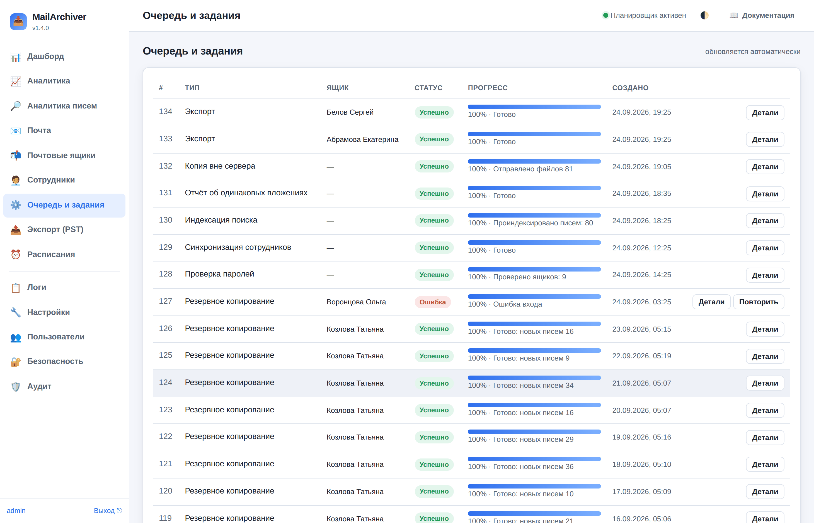
Раздел «Логи» показывает системный журнал сервиса с фильтром по уровню важности.
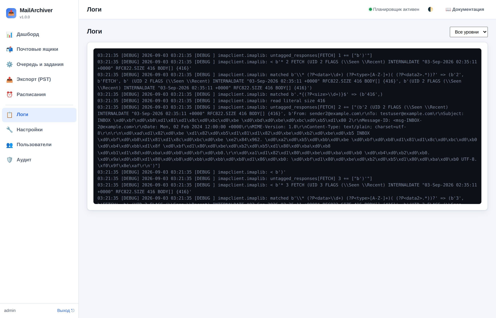
16. Безопасность
- Вход по паролю. Пароли пользователей хранятся в виде необратимого хеша (PBKDF2-HMAC-SHA256). Есть защита от подбора: после нескольких неудач вход временно блокируется.
- Шифрование секретов ящиков. Пароли и токены IMAP-ящиков хранятся в БД в зашифрованном виде (Fernet/AES). Ключ лежит в файле
secret.keyс правами только для владельца. - Сессии. Cookie сессии подписаны и ограничены по времени; есть авто-выход при бездействии.
Публикация через HTTPS (reverse proxy)
Чтобы открыть доступ извне безопасно, поставьте перед сервисом nginx или traefik с TLS. Пример nginx:
server {
listen 443 ssl;
server_name mail-backup.example.ru;
ssl_certificate /etc/letsencrypt/live/.../fullchain.pem;
ssl_certificate_key /etc/letsencrypt/live/.../privkey.pem;
location / {
proxy_pass http://127.0.0.1:8493;
proxy_set_header Host $host;
proxy_set_header X-Forwarded-For $remote_addr;
proxy_set_header X-Forwarded-Proto $scheme;
proxy_http_version 1.1;
proxy_set_header Upgrade $http_upgrade; # для WebSocket
proxy_set_header Connection "upgrade";
}
}
В настройках включите «За обратным прокси» и «Cookie только по HTTPS».
17. Устранение неполадок
| Симптом | Причина и решение |
|---|---|
| «Аутентификация IMAP не удалась» | Неверный логин/пароль, либо провайдер требует «пароль приложения» или OAuth2. Включите IMAP в настройках почты, создайте пароль приложения. |
| «Ошибка TLS/SSL» | Неверный порт или режим шифрования. Проверьте: SSL — порт 993, STARTTLS — порт 143. Для внутренних серверов с самоподписанным сертификатом отключите «Проверять TLS-сертификат IMAP». |
| «Превышено время ожидания» | Медленная сеть/сервер. Увеличьте таймауты в настройках (backup.socket_timeout_s). |
| Экспорт .pst не открывается в Outlook | Встроенный движок экспериментальный. Используйте движок Aspose (с лицензией) либо экспортируйте в EML/MBOX. |
| Импорт .pst не работает | Не установлен readpst. Установите пакет pst-utils (Debian/Ubuntu) или libpst (RHEL). |
| Служба не запускается | Смотрите логи: journalctl -u mailarchiver -n 50. Проверьте конфигурацию: mailarchiver check-config. |
| Мало места на диске | Включите ретеншн (хранить N дней) или сжатие писем (gzip) в настройках, либо расширьте диск. |
| Забыт пароль администратора | sudo -u mailarchiver /opt/mailarchiver/venv/bin/mailarchiver -c /etc/mailarchiver/config.yaml reset-password -u admin |
| «Пропуск папки … failed EXAMINE», «КОПИЯ НЕПОЛНАЯ» | Почтовый сервер отказался открыть папку — см. следующий раздел. |
| «Сервер вернул папку … повторно» | Сервер прислал папку в списке дважды. Вторая запись отбрасывается, копия не задваивается — делать ничего не нужно. |
Папка не открывается: failed EXAMINE
Это ответ почтового сервера: он отказался открыть папку. Прежде чем объявить копию неполной, MailArchiver делает три вещи:
- повторяет попытку через полторы секунды — часть отказов временная (ящик занят другой сессией);
- пробует открыть папку обычным
SELECTвместоEXAMINE: некоторые серверы (замечено на Axigen) отказывают только наEXAMINE. Письма всё равно скачиваются командойBODY.PEEK— отметки «прочитано» на сервере не появляются; - проверяет, есть ли у папки вложенные папки: если есть — это папка-контейнер, своих писем она не
хранит (сервер просто не пометил её флагом
\Noselect), и копия остаётся полной; - спрашивает командой
STATUS, сколько писем сервер видит в этой папке. 0 писем — копия остаётся полной, в журнале будет «папка ПУСТАЯ … потерь нет». N писем — задание помечается «частично выполнено» и в итоге пишется «КОПИЯ НЕПОЛНАЯ» с перечнем папок.
Что смотреть на сервере: открывается ли папка в веб-почте; имя папки (соседние имена вида
s2022 и s2022_000 — признак дубликата, который сервер создал сам при конфликте
имён, такие папки обычно и не открываются); права (ACL) учётной записи; не заблокирован ли ящик другой
сессией. В Axigen учётную запись чинят через CLI: telnet 127.0.0.1 7000 →
update domain name <домен> → REPAIR Accounts <учётка>; восстановленная
копия создаётся под именем вида <учётка>.00000015.repaired и её нужно переименовать —
это крайняя мера, делайте её в окно обслуживания.
Всё, что сервис пробовал и узнал, попадает в текст ошибки: «Что пробовали: EXAMINE — отказ (попыток: 2); обычный SELECT — отказ» и «Дополнительно: …». Строка «Дополнительно» отвечает на главный вопрос — кто виноват: «в списке папок сервера это имя есть … сама папка нерабочая» (чинить на почтовом сервере) либо «LIST по точному имени эту папку НЕ находит» (сервер не признаёт имя своим — беда с кодировкой или невидимым символом, его сервис назовёт: например «невидимый символ NBSP (U+00A0)»).
Папка не открывается давно — это перестаёт быть ошибкой
Папка, которую сервер не отдаёт несколько прогонов подряд, переходит в разряд «известных
нечитаемых»: сервис продолжает пробовать её и продолжает писать о ней в итоге задания, но задание
больше не помечается неполным. Порог задаёт настройка «Терпеть нечитаемую папку, прогонов»
(Настройки → «Резервное копирование», по умолчанию 3; 0 — считать ошибкой всегда).
Сломанную на сервере папку из архива не починить, а вечное «КОПИЯ НЕПОЛНАЯ» приучает не читать
предупреждения — и следующая настоящая пропажа писем останется незамеченной. Как только сервер
отдаст папку, счётчик сбрасывается и письма копируются как обычно.
Кнопка «Проверить папки на сервере»
«Почтовые ящики» → «⋯» у ящика → «🗂️ Проверить папки на сервере». Сервис опрашивает каждую папку и показывает таблицу с вердиктом: копируется (письма доступны), контейнер (своих писем не хранит, содержимое во вложенных папках), пустая, не открывается (терять нечего), НЕ ЧИТАЕТСЯ (вот это и есть потеря — вверху видно, сколько писем недоступно) и исключена (не копируется по настройкам ящика). Для нечитаемых там же есть кнопка «🚫 Больше не копировать эти папки».
18. Частые вопросы
Это удалит письма с почтового сервера?
Нет. Копирование только читает письма. По умолчанию локальная копия — это надёжный архив, из которого ничего не пропадает, даже если письмо удалят на сервере (если вы сами не включите соответствующую опцию ретеншна).
Сколько ящиков можно подключить?
Ограничений нет. Одновременность регулируется настройками (сколько заданий и подключений на ящик).
Нужен ли интернет для экспорта в PST?
Нет, экспорт локальный. Интернет нужен только движку Aspose при первичной установке библиотеки и для OAuth2.
Где лежат копии писем?
В каталоге данных (по умолчанию /var/lib/mailarchiver/mailboxes, в Docker — том /data).
Это обычные файлы .eml в структуре папок Maildir.
Можно ли перенести копии на другой сервер?
Да. Скопируйте каталог данных целиком — в нём и письма, и база индексов.
Безопасно ли открывать доступ из интернета?
Только через HTTPS (reverse proxy) и с включённой аутентификацией. Прямой доступ по HTTP наружу не рекомендуется.
19. API
Весь интерфейс работает поверх REST API. Его можно использовать для автоматизации. Полное описание —
по адресу /api/docs (интерактивная документация OpenAPI). Основные точки:
| Метод | Путь | Назначение |
|---|---|---|
| POST | /api/login | вход (устанавливает cookie сессии) |
| GET | /api/state | сводка для дашборда |
| GET/POST | /api/accounts | список / создание ящиков |
| POST | /api/accounts/{id}/backup | запустить копирование |
| POST | /api/accounts/{id}/export | запустить экспорт |
| POST | /api/accounts/{id}/restore | запустить восстановление |
| GET | /api/jobs | список заданий и их прогресс |
| GET | /api/exports/{id}/download | скачать готовый файл экспорта |
| GET/PUT | /api/settings | чтение / изменение настроек |
MailArchiver v1.2.1 · документация сгенерирована из исходного кода, поэтому справочник параметров всегда соответствует установленной версии.